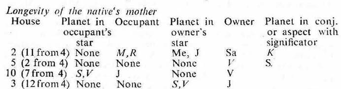
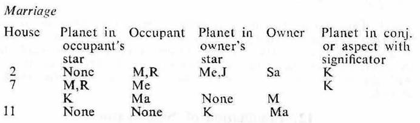

1. An event happens during the joint period (i.e. during the period, sub period, inter period and sookshma period) of the significators of the houses under consideration.
2. In cases where the significators of the houses under consideration exceed more than four, the unimportant significators should be eliminated as under:
(a) Preference should be given to Rahu or Ketu if it represents any significator.
(b) The planet whose sublord is the significator of the house detrimental to the house or houses under consideration should be eliminated first.
3. The order of the period rulers becomes fixed according to the sign position of Moon at the time of birth in each case. So one cannot avoid this. Hence if the period ruler is in any manner connected with the matter of the house under consideration or if it be the chief governor of the matter under consideration, it is to be considered as an important significator of the matter under consideration.

As Ketu represents Moon, omit Moon and retain Ketu. As Sun's sublord Saturn occupies the 1st house of the mother omit it. So Ketu, Venus and Rahu become the final significators of the badhaka and maraka houses as counted from the 4th for the native's mother.
The native's mother died on 1-11-1923 during the joint period of Ketu, Venus and Rahu.

Moon is in the sub Sun which occupies the 6th, so omit it.
Mercury, Ketu, Rahu and Jupiter are in the sub Rahu which occupies the 2nd and which is the significator of the 7th. So retain them.
It may be noted that the native passed the periods of Mercury and Ketu in his child hood. The period of Rahu will start in his old age and there is no scope for the period of Jupiter. So these significator planets will work as sub period, inter period or sookshma period rulers.
The native was running the period of Venus since 13-1-1929 and it continued up to 13-1-1949. Venus is the chief governor of marriage. It is in the star of Jupiter and in the sub Saturn owning 2. The star lord Jupiter aspects the 7th cusp, Moon owning 7, Mercury in 7 and Rahu in 2. So Venus is a strong significator of marriage.
The native got married on 13-12-1937 during the joint period of Venus, Rahu, Jupiter and Rahu.